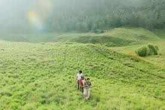

PADANG SAVANA
Padang Savana Dieng memiliki pesona yang tidak kalah dengan pemandangan di Bromo hingga Madagaskar. Wisata alam ini juga cocok untuk healing, camping, hiking, hingga spot pre wedding.
Padang Savana Dieng memiliki pesona yang tidak kalah dengan pemandangan di Bromo hingga Madagaskar. Wisata alam ini juga cocok untuk healing, camping, hiking, hingga spot pre wedding.